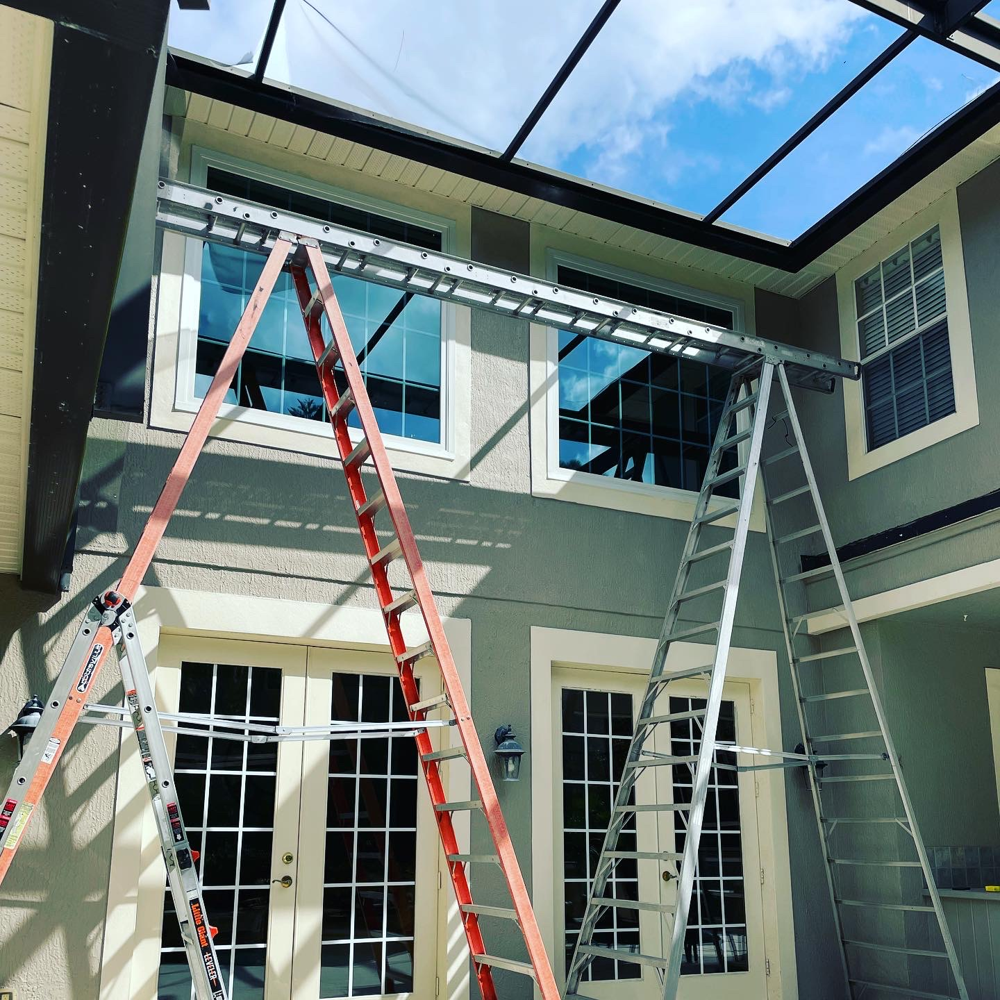
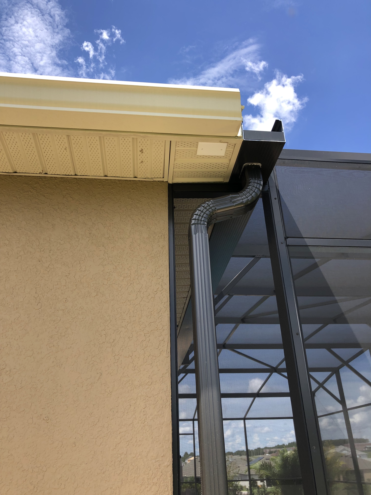
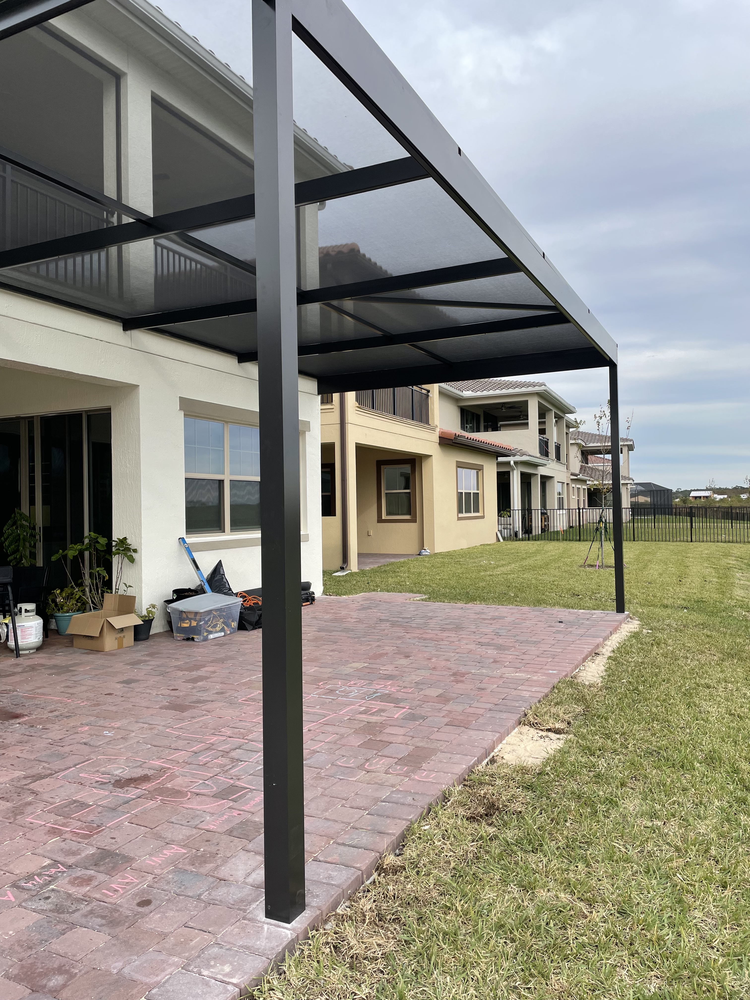
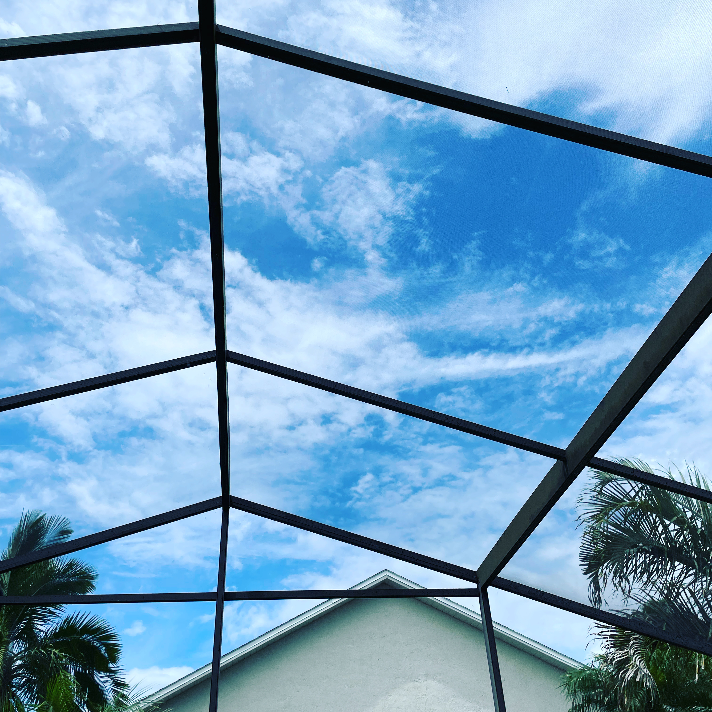
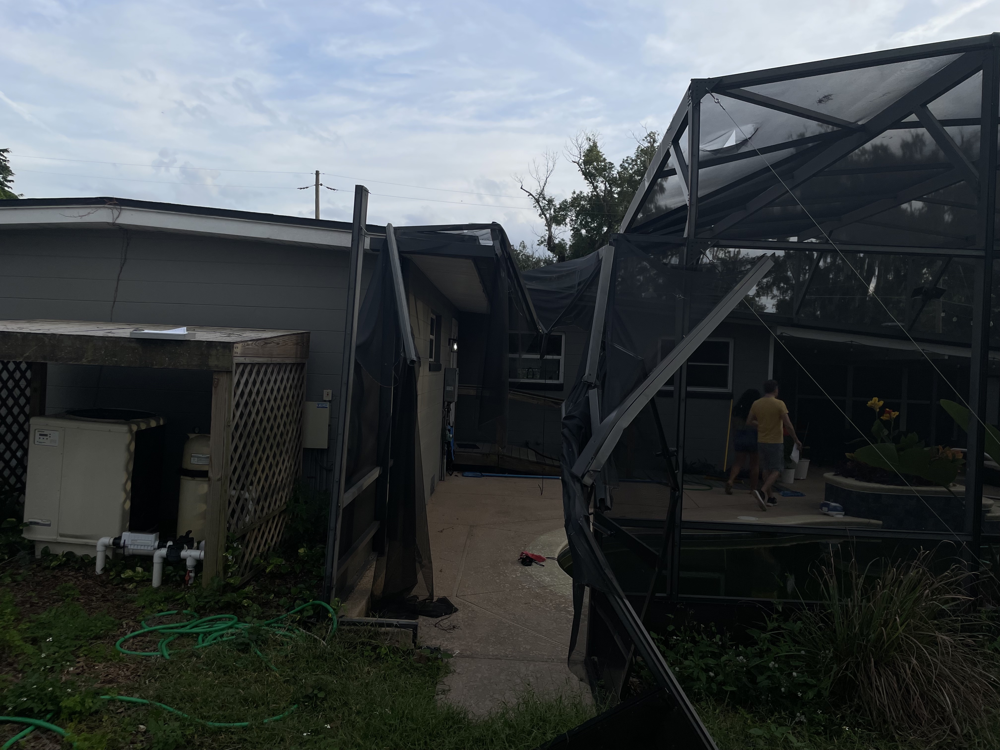

Structural Reinforcement
Restore strength and stability to your enclosure.
Strong · Reliable · Built to Last
We repair damaged aluminum structures, restore strength, and ensure your enclosure is safe, secure, and visually clean.
Aluminum enclosures can be damaged by storms, impact, or long-term wear. We repair bent beams, reinforce structures, and replace damaged components to restore safety and performance.
We provide aluminum structure repair for residential properties, HOA communities, apartment complexes, and property management companies across Central Florida.





 BEFORE
AFTER
BEFORE
AFTER
Simple Screen Service provides professional screen enclosure repair across Central Florida including Orlando, Kissimmee, Clermont, Winter Garden, and surrounding areas. Whether you need pool cage repair, patio screen replacement, or full re-screening, our team delivers fast, clean, and reliable service built for Florida weather.
If you're searching for screen enclosure repair near me, our experienced technicians are ready to restore your enclosure quickly and professionally.
Restore strength and stability to your enclosure.
Fast response to restore damaged structures.
Repair instead of full replacement when possible.
Clean, precise, and reliable results.
Need screen replacement? Visit our screen repair services or our pool enclosure services for full upgrades.
Call (407) 405-5790 or request a free consultation.
Request Free EstimateOur team provides professional screen enclosure services across: